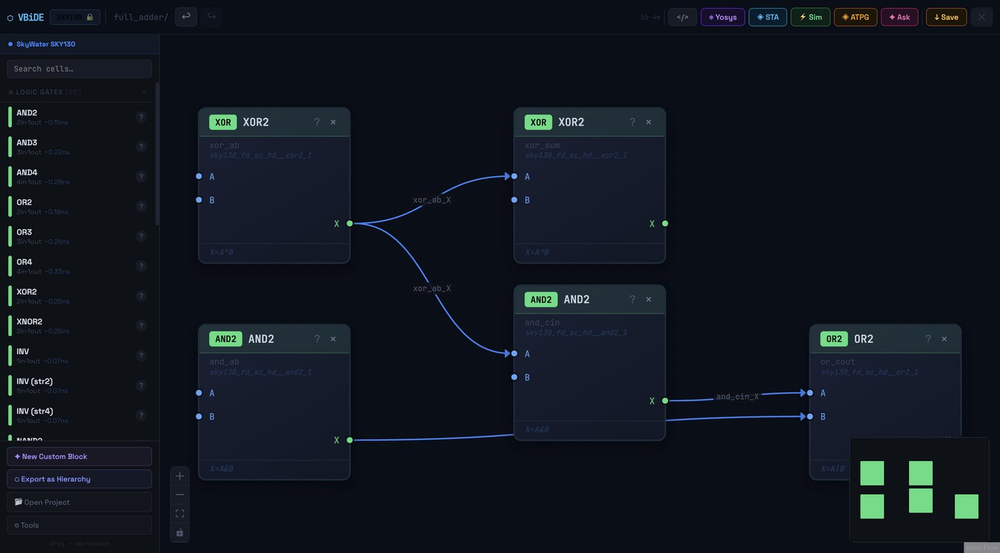
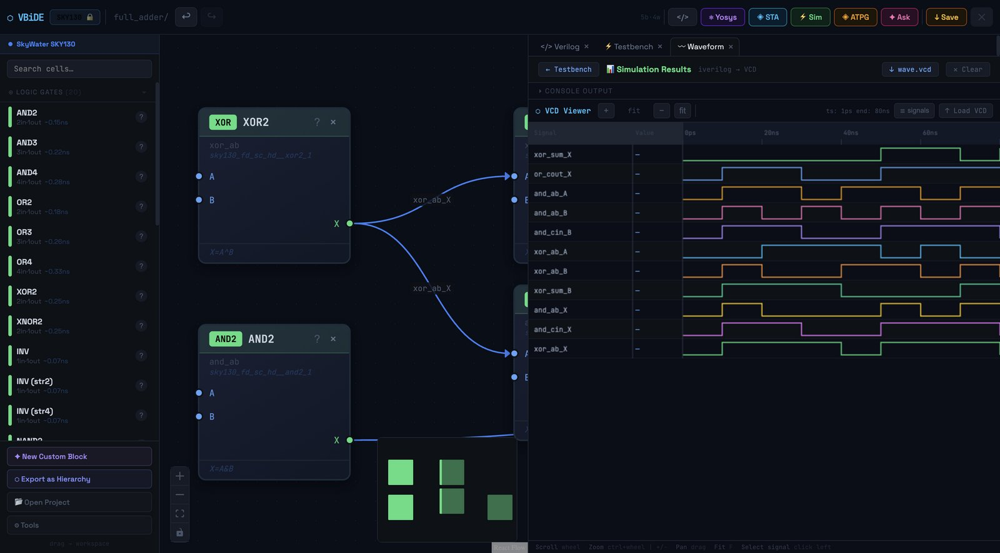
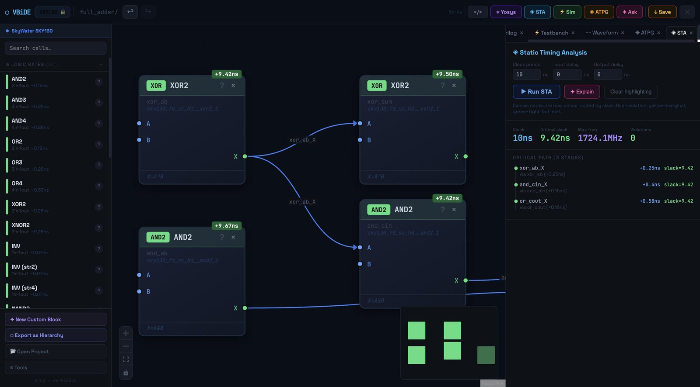
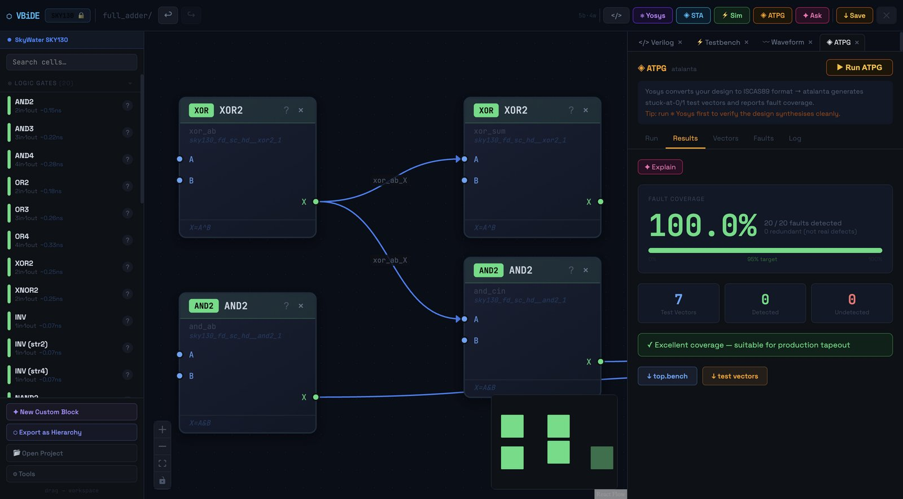
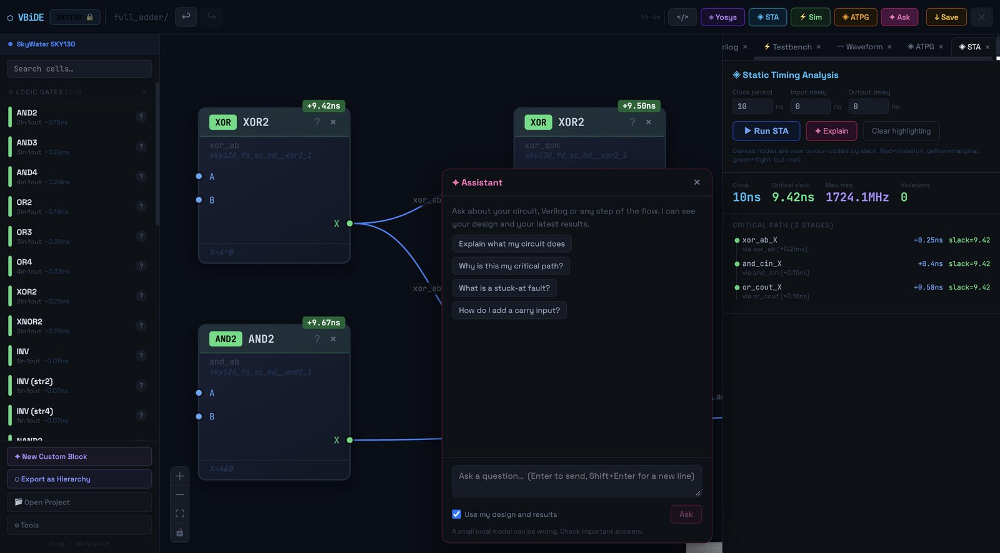

Getting started
- Download the app for your system and open it (the download page has first-launch help for each system).
- In New Project, give the project a name and pick a process (PDK): SkyWater SKY130 or GlobalFoundries GF180MCU. The PDK is fixed once cells are on the canvas; clear the canvas to change it.
- The cell list on the left now holds that process's standard cells. Drag one onto the canvas to begin.

For synthesis onto real cells you also need the PDK itself on your computer (see Synthesis); everything else works without it.
Drawing a circuit
- Add a cell: drag it from the cell list. ? on a cell explains what it does, with a Verilog snippet.
- Wire: drag from an output pin (right side of a cell) to an input pin (left side). A wire is named after the pin that drives it, and one output can drive many inputs.
- The app refuses wires between pins of different widths, a second wire into an input that already has a driver, and any wire that would make a combinational loop (a gate's output feeding back to its own input through logic only). Feedback through a flip-flop or latch is fine.
- Delete a wire: click it (or its name) to select it, then click the × on it, press Delete/Backspace, or simply double-click the wire.
- Move cells by dragging; delete a selected cell or wire with Delete or Backspace (the Mac's delete key), or the × on the cell. Undo, redo, copy and paste work as usual (see shortcuts).
- ↓ Save stores the project; 📂 Open Project (bottom left) opens a saved one.

Naming signals
Pins that are not wired become the ports of your module. By default a port is named <cell>_<pin>,
for example sky130_xor2_1_A. To give it a real name:
- Double-click the pin's label on the cell.
- Type a name such as
a,cinorsumand press Enter (Esc cancels; an empty name goes back to the default).
- Naming an output also names the wire it drives.
- Two unconnected inputs may share a name on purpose: they become one shared input port.
- Names must be valid Verilog: letters, digits and
_, starting with a letter or_, and not a Verilog keyword.
The Verilog
</> in the toolbar shows the structural Verilog of your design, updated as you draw. Each cell becomes one
statement; unconnected pins are the module's ports. Copy it, or download top.v.

Simulation
- Click ⚡ Sim. The testbench panel lists every input of your design.
- Pick a stimulus for each input: constant (a fixed value), clock (a period), sequence (a list of values, one per period) or random (a number of random values, one per period). All inputs run at the same time.
- Click ▶ iverilog. The app writes the testbench, compiles and runs it with Icarus Verilog, and opens the waveform.
The Preview tab shows the generated testbench; Custom TB lets you write your own.
The waveform viewer
The viewer opens showing the whole run. Each row is one signal; buses show their value.
- Zoom: + / − buttons, the keys + -, or Ctrl+scroll. fit or F shows the whole run again. Pan by dragging or scrolling.
- Click in the waves to place a cursor; the value column shows every signal at that time.
- ☰ signals adds or removes signals. Click a signal's name to select it: then you can move it, change its colour, or show a bus in hex, binary or decimal.
- ↓ wave.vcd saves the waveform; ↑ Load VCD opens one from elsewhere.

cocotb tests (Python)
The testbench panel's cocotb tab writes a cocotb test for your design: Python that drives
every input and logs the outputs, with a place for your assert checks. Pick a template:
- Simple test: random values on every input, the outputs logged.
- UVM (pyuvm): the structure of a UVM testbench in Python (pyuvm): a sequence item, a sequence, a sequencer, a driver, a scoreboard (put your reference model there), an environment and a test.
Edit it, then press ▶ Run cocotb: it runs with the app's Icarus Verilog and shows how many tests passed, with the log. On macOS and
Linux, Python, cocotb and pyuvm come with the app. On Windows install Python, then python -m pip install cocotb pyuvm
(not yet verified with the bundled simulator). A cocotb test is a Python program and runs with your user's rights, so only run tests you trust.
Synthesis (Yosys)
⚛ Yosys maps your design onto the PDK's real standard cells and reports which cells it used and the chip area.
It needs the PDK's Liberty file (for SKY130, sky130_fd_sc_hd__tt_025C_1v80.lib), so the first time it asks for
your PDK folder: point it at the PDK root (for example a sky130A folder installed with
ciel or volare) and click Validate.
Without a Liberty file the app refuses to synthesise rather than report results for the wrong cells.
Formal verification
Simulation checks the inputs you choose; a formal check covers all of them. ⊨ Formal opens a properties module that wraps your design: every input is free, so the checker considers every value. Write what must always hold:
always @(*) begin
assume (!(a && b)); // only consider inputs where this holds
assert (sum == (a ^ b ^ cin)); // must hold for every such input
endChoose Prove (for all cases) or Bounded check (the first N steps, for designs with flip-flops), then ▶ Run.
SymbiYosys answers PASS (proved), FAIL (with a counterexample: 〰 Open the counterexample shows it in the waveform
viewer) or UNKNOWN (the proof didn't close; try a bounded check or add assumptions). For flip-flops, check properties on a clock
edge: always @(posedge clk) assert (...);
Timing (STA)
◈ STA runs static timing analysis with each cell's typical delay. Set the clock period (and input/output delays) and click Run STA. You get the critical path, the worst slack, the maximum clock frequency and any setup violations; the cells on the canvas are coloured by their slack.

Fault coverage (ATPG)
◈ ATPG asks: if any wire in the circuit were stuck at 0 or at 1, is there an input pattern that would reveal it? Yosys turns the design into simple gates, and atalanta generates the test patterns and reports the fault coverage, the number of test vectors, and any redundant (impossible to detect) faults. The Vectors tab lists every test pattern: the value to apply to each input and the output a fault-free chip gives (↓ top.test saves them). The Log tab shows atalanta's full output.
atalanta is not included with the app. Its licence allows teaching and research use only, so you build it yourself in a few minutes: follow the atalanta guide (macOS, Windows, Linux). The app's ⚙ Tools window shows the commands for your system too.

Reusing designs
- Build a small design, for example a half adder, and name its ports (
a,b,sum,carry). - Click ⬡ Export as Hierarchy (bottom left), give it a label and colour, and export.
- It appears in the cell list under My Designs. Drag it into another design like any cell: two half adders and an OR gate make a full adder.
The generated Verilog defines each saved design once, as its own module, and simulation, synthesis and ATPG all work on the whole design. ✦ New Custom Block lets you write a block in Verilog yourself.
The learning assistant
VerilogBlocks IDE has its own tutor, vbide-tutor. It explains digital design using your circuit and your results, and it runs on your own computer: nothing you type leaves the machine.
Set it up
- Install Ollama (free; macOS, Windows, Linux) and start it. It runs in the background.
- In the app, click ✦ Ask, then Set up the tutor. The app downloads the base model, Qwen2.5-Coder 1.5B (Apache-2.0, about 1 GB), once, and builds vbide-tutor from it with instructions about this app. That's it.
Use it
- Ask in your own words: "Why is this my critical path?", "What is a stuck-at fault?", "How do I add a carry input?".
- Press ✦ Explain next to a result: on the simulation output, Yosys results, timing results, ATPG results and failures. On a cell's ? help, ✦ Ask about this cell.
- With Use my design and results ticked, each question goes with your cells, your Verilog and the latest simulation, timing, ATPG and Yosys results. Untick it for general questions.
- The chat floats over the canvas and stays open beside any panel. Closing it keeps the conversation; Clear starts over.
- It knows how far along the recommended flow you are (design, simulation, timing check, synthesis, test vectors, formal verification) and can suggest the next step; once you reach testing it introduces design-for-test and structured verification (assertions, coverage, UVM, cocotb). Ask it to compare two designs and it weighs correctness, size, timing, testability and how cleanly they synthesise.

A small model can be wrong; check important answers. To remove it later: ollama rm vbide-tutor:2.1 qwen2.5-coder:1.5b.
To see exactly how the tutor is built: ollama show vbide-tutor:2.1 --modelfile.
Panels and tabs
Every tool you open (Verilog, Yosys, STA, Testbench, Waveform, ATPG) becomes a tab in the right-hand frame, like Vivado's windows: click a tab to bring it to the front, × to close it. Drag the frame's left edge to make it wider or narrower; double-click the edge to go back to the panel's own width. The width is remembered.
The Tools window
⚙ Tools (bottom left) lists the programs the app runs (yosys, iverilog, vvp, atalanta, SymbiYosys, and Python with cocotb and pyuvm) and says for each whether it is included with the app, installed on this computer, or missing, with its version and location. When atalanta is missing it shows how to build it for your system.
Keyboard shortcuts
| Keys | Action |
|---|---|
| Ctrl/⌘ Z | Undo |
| Ctrl/⌘ Y, or Ctrl/⌘ Shift Z | Redo |
| Ctrl/⌘ C / V | Copy / paste the selected cells and the wires between them |
| Delete or Backspace | Delete the selected cells or wires |
| Double-click a pin label | Name that signal (Enter saves, Esc cancels) |
| + - F ← → | Waveform: zoom in, zoom out, fit the whole run, scroll |
| Enter / Shift Enter | Assistant: send the question / new line |
Where your work is saved
| System | Folder |
|---|---|
| macOS | ~/Library/Application Support/VerilogBlocks IDE |
| Windows | %APPDATA%\VerilogBlocks IDE |
| Linux | ~/.config/VerilogBlocks IDE |
Projects are ordinary folders (graph.json, top.v, the testbench); outputs of synthesis and ATPG sit next
to them. Updating the app leaves them in place.
Troubleshooting
macOS says the app is "damaged"
The app isn't signed by Apple yet. Run xattr -dr com.apple.quarantine "/Applications/VerilogBlocks IDE.app" once, then open it.
Windows shows "Windows protected your PC"
The installer isn't code-signed yet. Click More info, then Run anyway.
The Linux AppImage doesn't start
Make it executable (chmod +x). On Ubuntu 22.04 and newer, AppImages also need FUSE 2: sudo apt install libfuse2
(on 24.04: libfuse2t64), or start it with --appimage-extract-and-run.
ATPG says "atalanta not found"
Build it with the atalanta guide, restart the app,
and check ⚙ Tools. On macOS and Linux the app also looks in ~/.local/bin, where the guide installs it.
Synthesis refuses to run
It needs your PDK's Liberty file: open the PDK selector (the PDK chip in the toolbar), enter your PDK root folder and click Validate.
The assistant says it can't find Ollama
Make sure Ollama is installed and running (its icon shows in the menu bar or system tray, or run ollama serve), then click
Check again.
Something else
Open an issue on GitHub with what you did, what you expected and what happened; a screenshot and the ⚙ Tools window's contents help.
Licences
VerilogBlocks IDE is MIT-licensed. It includes unmodified Yosys (ISC) and Icarus Verilog (GPL-2.0) from OSS CAD Suite, run as separate programs; their licence texts come with the app. atalanta is not included (teaching and research use only; see its guide). The assistant's base model, Qwen2.5-Coder 1.5B, is Apache-2.0; Ollama is MIT.